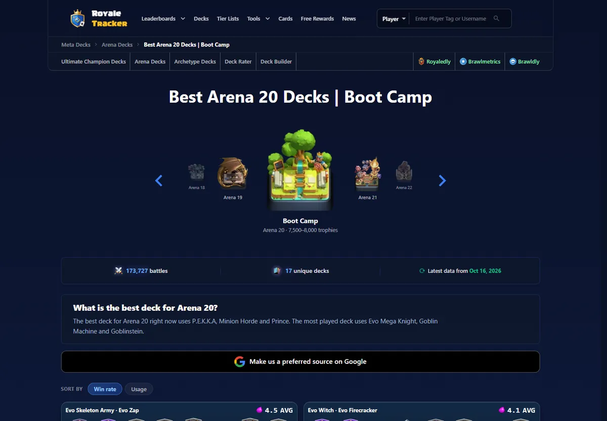
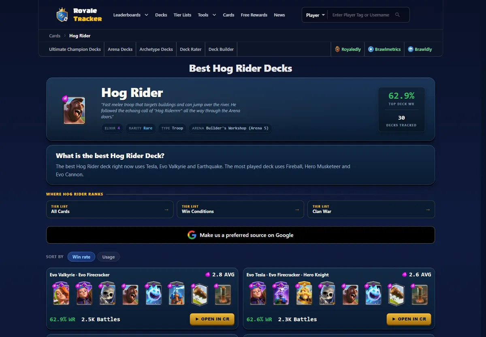

RoyaleTracker.gg↗
Statistics platform for Clash Royale, fed by a pipeline that polls the game's official API around the clock and turns the data into rankings, leaderboards and player profiles.
- Own data pipeline. Replaced web scraping with our own ingestion: a long-running worker polls the API for a managed pool of players, deduplicates records that arrive from more than one source and classifies them before they reach PostgreSQL. A nightly job rolls raw records into weekly aggregates that outlive the retention window, and a verifier recomputes every aggregate from the raw data.
- Rankings that hold up. Results are ordered by the Wilson score lower bound with a minimum sample size, so a small sample cannot outrank a large one, and anomaly filters drop manipulated data before it is published.
- Reliability by design. Each production incident became a permanent safeguard: create-before-revoke rotation for IP-bound API keys, cache bypass after upstream outages, an eviction job after a disk-full outage, request deadlines on slow queries and a health monitor that reports to Discord.
- LLM features. A recommendation engine and an automated deck rater run on the Anthropic Claude API, behind per-device and per-network rate limits stored in PostgreSQL.
- Technical SEO in code. Structured data generated from each page's own values, one canonical URL builder, dynamic Open Graph images and correct 404 / 410 responses, all checked by an automated audit script.
Next.js 16React 19MUINode.jsExpressPostgreSQLDockerCoolifyCloudflareAnthropic API


887K+records ingested per day
38M+records stored, 45-day retention
184detail pages ranked from live data
300+pages in the sitemap
Figures measured in October 2026.